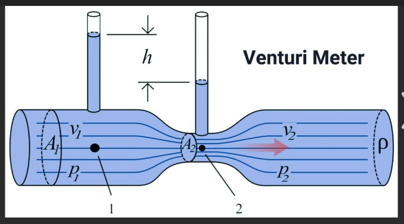

Experiment3: Venturi Meter Experiment
Aim
To determine the coefficient of discharge of a Venturi meter experimentally and to study the relationship between the pressure difference and the velocity of fluid flowing through the Venturi meter.
Apparatus Required
- Venturi meter
- Manometer
- Measuring tank
- Stopwatch
- Flow control valve
Theory
The Venturi meter is a device used to measure the flow rate of a fluid through a pipe. It works on the principle of Bernoulli’s equation, which is based on the conservation of energy in fluid flow. The equation relates the pressure, velocity, and elevation at two points along the flow path. The Venturi meter consists of a pipe that narrows at a section called the throat. At this point, the velocity of the fluid increases, causing the pressure to decrease.
The fundamental principle behind the Venturi meter is Bernoulli's theorem, which states that the total mechanical energy (the sum of the pressure energy, kinetic energy, and potential energy) of the fluid is constant along a streamline in steady, incompressible flow. The equation for Bernoulli’s principle is given as:
p1 / w + (V1^2 / 2g) + Z1 = p2 / w + (V2^2 / 2g) + Z2
Where:
- p1, p2 = Pressure at points 1 and 2 (N/m2)
- V1, V2 = Velocity at points 1 and 2 (m/s)
- Z1, Z2 = Elevation at points 1 and 2 (m)
- w = Specific weight of the fluid (N/m3)
At the throat of the Venturi meter, the velocity of the fluid increases, and the pressure decreases. The difference in pressure between the wider section and the throat can be used to calculate the velocity of the fluid using the continuity equation and Bernoulli’s principle.
The flow rate can be calculated using the following relationship:
Q = A1V1 = A2V2
Where:
- Q = Flow rate (m3/s)
- A1, A2 = Cross-sectional area at points 1 and 2 (m2)
- V1, V2 = Velocity at points 1 and 2 (m/s)
By measuring the pressure difference between the two points (1 and 2), and knowing the cross-sectional areas of the pipe at these points, the velocity and flow rate can be determined. The coefficient of discharge, which is the ratio of the actual flow rate to the theoretical flow rate, can also be determined experimentally.
Diagrams:
Here is a basic diagram illustrating an Venturi meter setup:
Procedure
- Set up the Venturi meter with the required apparatus (manometer, measuring tank, etc.).
- Ensure all connections are tight to avoid leaks.
- Start the flow of water through the Venturi meter.
- Record the pressure readings at points 1 and 2 using the manometer.
- Measure the velocity of water at points 1 and 2.
- Record the elevations at both points.
- Perform multiple trials for accuracy and consistency.
- Apply Bernoulli’s equation to calculate the theoretical results and compare with observed data.
Observations
| Total Head at Point 1 (m) | Total Head at Point 2 (m) | Head Loss (m) | Verification |
|---|
Results
The Venturi meter experiment allows us to measure the velocity and pressure difference between two points in a flowing fluid. By comparing experimental results with theoretical calculations using Bernoulli’s equation, we can assess the accuracy and reliability of the meter's performance.
Precautions
- Ensure the Venturi meter is properly installed and free from leaks.
- Check all measuring instruments for accuracy before starting the experiment.
- Use clean water to avoid clogging or contamination of the flow system.
- Ensure consistent water flow throughout the experiment to maintain accuracy.